Práctica 5: Series de Fourier en tiempo continuo
Integrantes
- Alvarez Garcia Elian Alexander
- Diego Vertiz Alexis
- Marquina Zendejas Victor
- Mendivil Herrera Jesus Alejandro
UPIITA IPN Señales y Sistemas Grupo: 2TV1
Contents
Objetivos
- Realizar gráficas de series de Fourier exponenciales y trigonométricas en tiempo continuo
- Manipulación de instrucciones en MATLAB
- Calculo númerico de los coeficientes de Fourier
Introduccion
Existen tres maneras de representar una serie de Fourier, cada una con sus respectivas ventajas matemáticas respecto a qué tipo de función, ésta pretende aproximar. La serie de Fourier exponencial nos permite modelar expresiones tanto reales como imaginarias dadas sus características exponenciales.
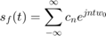
Donde en este caso especial los coeficientes de Fourier son llamados 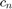$; los cuales se obtienen aplicando algunos despejes de la forma trigonométricas y finalmente se calculan de la siguiente manera
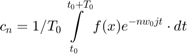
Como es posible apreciar en esta última ecuación el cálculo de $ está en función del elemento a calcular. Esto es que varía en función de n que es un parámetro dentro de la serie. Otra forma de encontrar los coeficientes de Fourier de forma numérica es a través de software. En el capítulo 6.6 del libro Continuous-Time Signal Analysis se mencionan algunos pasos para llegar a un método analítico
Aplicando sobre un intervalo de muestreo T con periodo 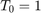 en la señal 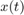 , tenemos que  donde 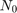 es el número de muestras en un periódo 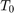$. Para encontrar la relación entre 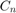 y consideramos la definición de los coeficientes de Fourier; donde al aplicarle límites en lugar de integrar se llega a las siguientes dos relaciones
donde 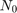 es el número de muestras en un periódo 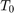$. Para encontrar la relación entre 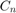 y consideramos la definición de los coeficientes de Fourier; donde al aplicarle límites en lugar de integrar se llega a las siguientes dos relaciones
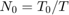
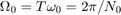
Cabe destacar en esta síntesis del método un concepto que traducido al español es llamado "Error de Solape"; el cuál es básicamente una aproximación cuando el límite de 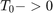 y se indetermina el límite. Para este caso el método numérico tiende a valores muy pequeños cercando al cero, pero nunca siendo cero. Ello implica que la Serie de Fourier tenga una ligera diferencia a la función original.
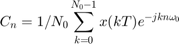
Aplicando las dos ultimas relaciones en la ecuación anterior, se tiene una nueva igualdad entre los valores de $
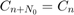
Problema 1 - Ejemplo 6.1
Para 4 armonicos
a0=0.504; an=@(n) (2*0.504)/(1+(16*n*n)); bn=@(n) (8*0.504*n)/(1+(16*n*n)); t0=0; tf=3.1416; f=@(t) exp(-t/2); armo=4; a=-7; b=7; sft(t0,tf,an,bn,a0,f,armo,a,b)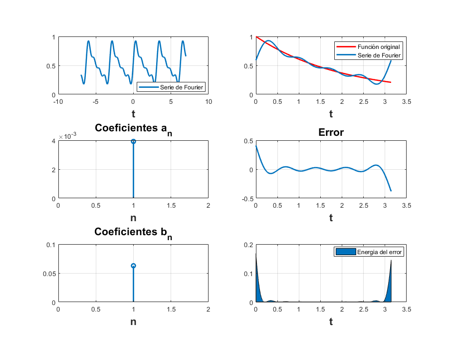
Para 15 armonicos
clf; a0=0.504; an=@(n) (2*0.504)/(1+(16*n*n)); bn=@(n) (8*0.504*n)/(1+(16*n*n)); t0=0; tf=3.1416; f=@(t) exp(-t/2); a=-7; b=7; armo=15; sft(t0,tf,an,bn,a0,f,armo,a,b)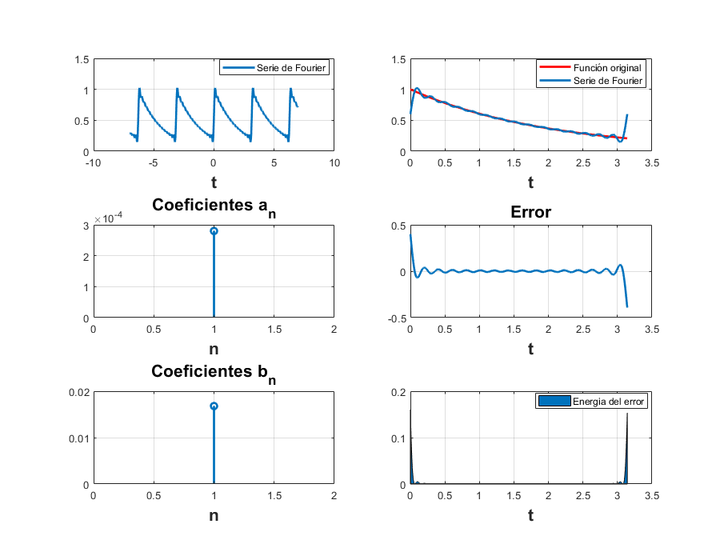
Problema 2 - Ejemplo 6.2
Para 4 armonicos
clf; d0=0; dn=@(n) (12/((n*pi).^2)).*abs(sin(n*pi/2)).*exp((-pi/2)*n*1i); t0=-0.5; tf=1.5; f=@(t) ((6*t).*(t>=-0.5 & t<0.5))+((6-6*t).*(t>=0.5 & t<1.5)); armo=4; a=-7; b=7; sfc(t0,tf,dn,d0,f,armo,a,b)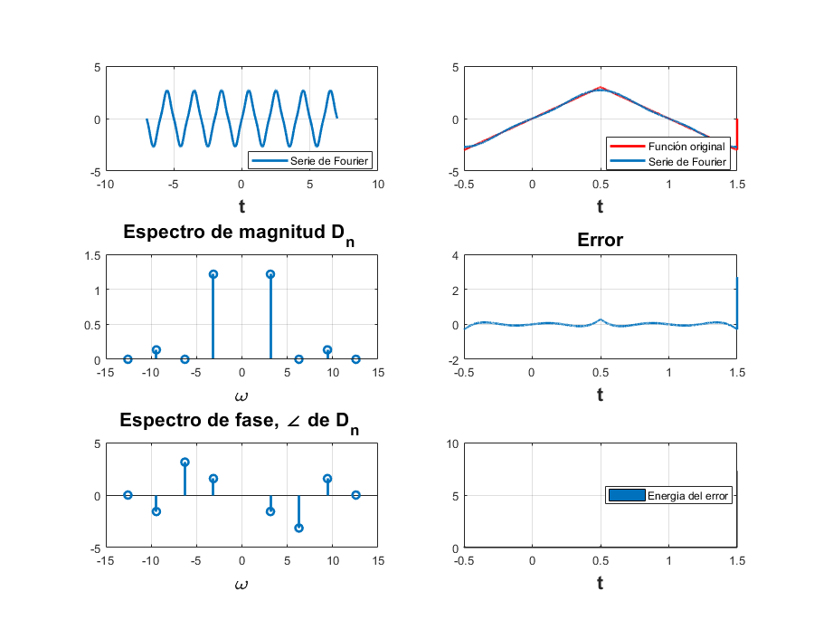
Para 15 armonicos
clf; d0=0; dn=@(n) (12/((n*pi).^2)).*abs(sin(n*pi/2)).*exp((-pi/2)*n*1i); t0=-0.5; tf=1.5; f=@(t) ((6*t).*(t>=-0.5 & t<0.5))+((6-6*t).*(t>=0.5 & t<1.5)); armo=15; a=-7; b=7; sfc(t0,tf,dn,d0,f,armo,a,b)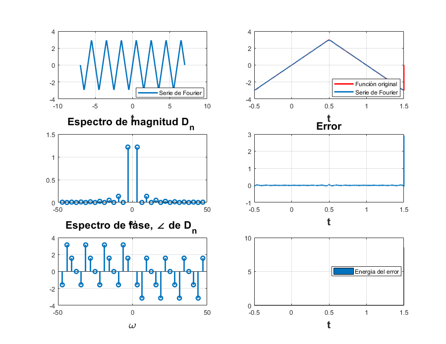
Problema 3 - Ejemplo 6.4
Para 4 armonicos
clf; d0=1/2; dn=@(n) sin((pi*n)/2)./(n*pi); t0=-pi; tf=pi; f=@(t) (0.*(-pi<=t<=-pi/2 & pi/2<=t<=pi)) + (1.*(t>-pi/2 & t<pi/2)); armo=4; a=-7; b=7; sfc(t0,tf,dn,d0,f,armo,a,b)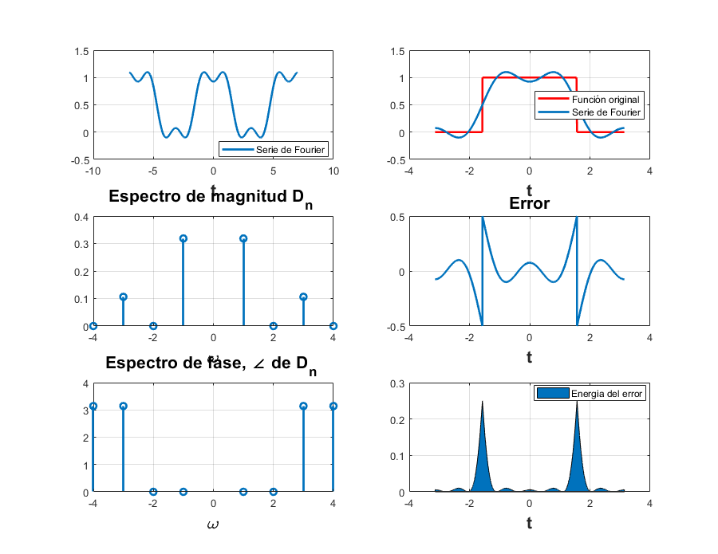
Para 15 armonicos
clf; d0=1/2; dn=@(n) sin((pi*n)/2)./(n*pi); t0=-pi; tf=pi; f=@(t) (0.*(-pi<=t<=-pi/2 & pi/2<=t<=pi)) + (1.*(t>-pi/2 & t<pi/2)); armo=15; a=-7; b=7; sfc(t0,tf,dn,d0,f,armo,a,b)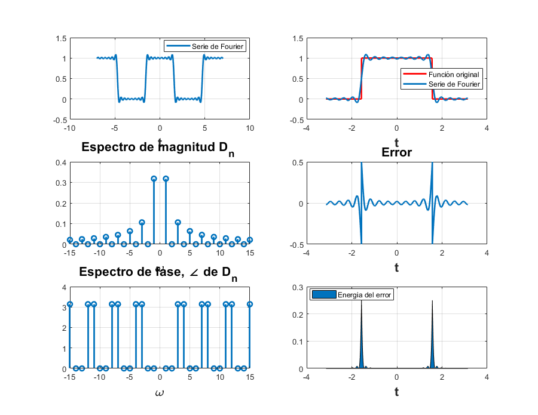
Problema 4 - Ejercicio 6.5
Para 4 armonicos
clf; d0=2/pi; dn=@(n) 2/(pi*(1-(4*n*n))); t0=0; tf=pi; f=@(t) abs(sin(t)); armo=4; a=-7; b=7; sfc(t0,tf,dn,d0,f,armo,a,b)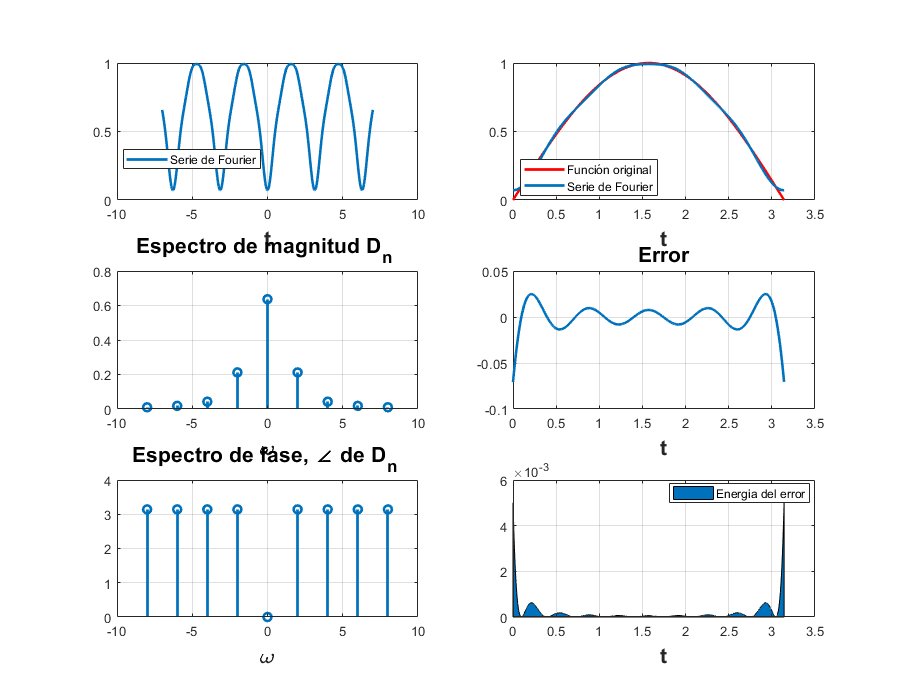
Para 15 armonicos
clf; d0=2/pi; dn=@(n) 2/(pi*(1-(4*n*n))); t0=0; tf=pi; f=@(t) abs(sin(t)); armo=15; a=-7; b=7; sfc(t0,tf,dn,d0,f,armo,a,b)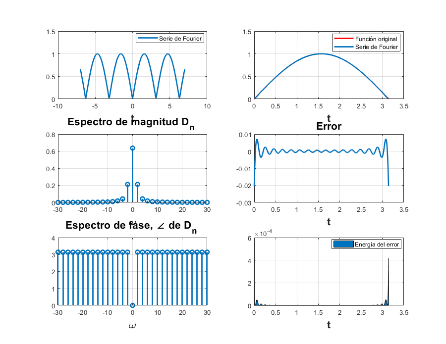
Problema 5 - Ejemplo 6.7
Para 4 armonicos
clf; d0=1/3; dn=@(n) 1/3; t0=-3/2; tf=3/2; armo=4; a=-7; b=7; sfco(t0,tf,dn,d0,armo,a,b)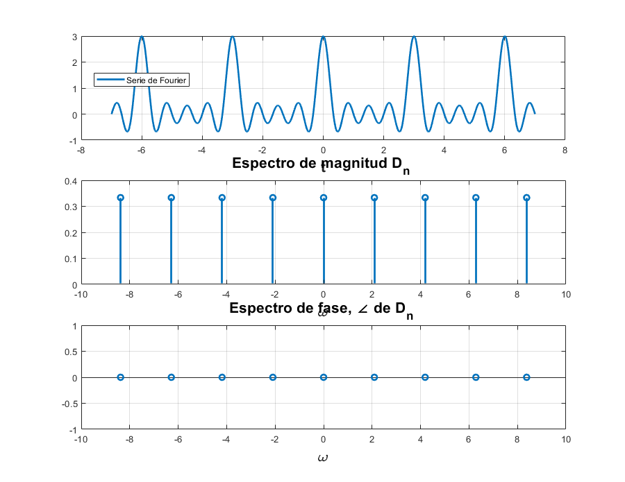
Para 15 armonicos
clf; d0=2/pi; dn=@(n) 2/(pi*(1-(4*n*n))); t0=0; tf=pi; armo=15; a=-7; b=7; sfco(t0,tf,dn,d0,armo,a,b)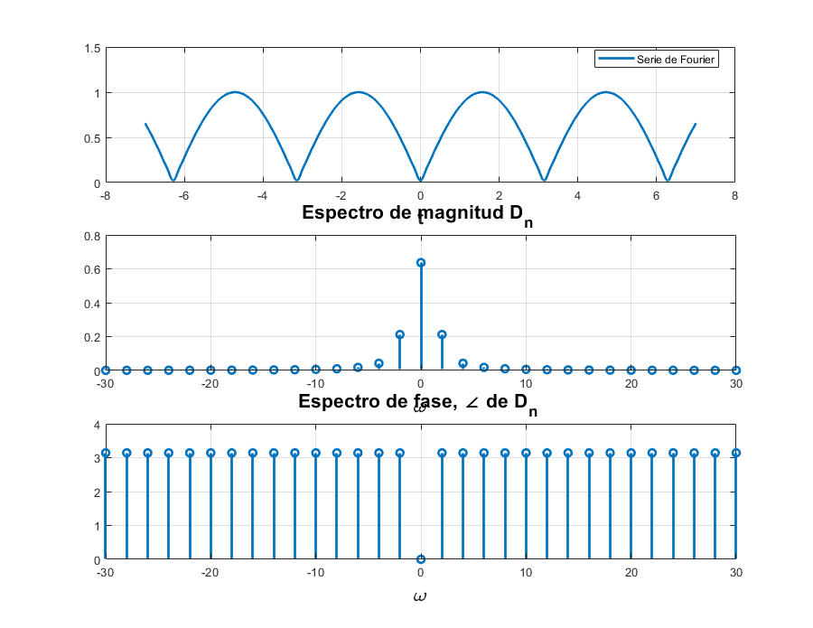
Problema 6 - Ejemplo C6.2
clf; x =@(t) ((6*t).*(t>=-0.5 & t<0.5))+((6-6*t).*(t>=0.5 & t<1.5)); t = [-1.5:0.001:2.5]; sumterms = zeros(16, length(t)); sumterms(1,:) = 0; for n = 1:size(sumterms,1)-1; sumterms(n+1,:) = (12*sin(n*pi/2)*sin(n*pi*t))/(n*pi*pi*n); end x_N = cumsum (sumterms); figure(1); clf; ind = 0; for N = [0,1:2:size(sumterms, 1)-1]; ind = ind+1; subplot (3,3,ind); plot (t,x_N(N+1,:), 'k', t ,x(mod(t,pi)),'--r'); axis ([-0.5 1.5 -3 3]); xlabel ('t'); ylabel (['x_{',num2str(N),'} (t)']); end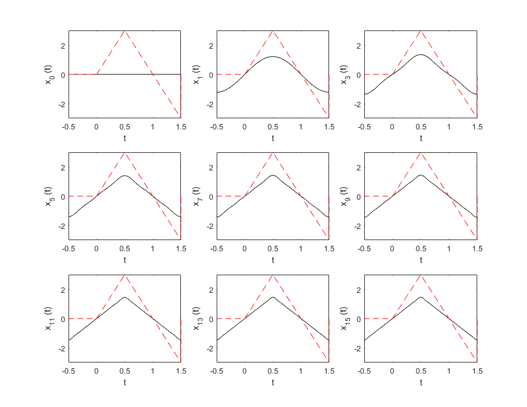
Problema 7 - Comparacion de coefecientes
function integral=trapeciocom(f,a,b,n) f0=subs(f,a); fn=subs(f,b); h=(b-a)/n; fs=0; for i=1:n-1 x(i)=a+h*i; fs=fs+subs(f,x(i)); end integral=0.5*h*(f0+2*fs+fn);
f=exp(-t/2); a=0; b=pi; n=15; trapeciocom(f,a,b,n); Integral=1.5857;
Tabla del trapecio compuesto
Dn = {'D0';'D1';'D2';'D3';'D4'};
Aritmetico = [0.504;0.0296 - 0.1186i;0.0078 - 0.0620i;0.0035 - 0.0417i;0.0020 - 0.0314i];
Trapecio = [0.5047+0.0000i;0.0301-0.1168i;0.0082-0.0583i;0.0040-0.0361i;0.0025-0.0237i];
Lathi = [0.504281105948516 + 0.00000000000000i;0.0296650836043681 - 0.118647676913452i;0.00775972886772522 - 0.0620525144086751i;0.00347937240545304 - 0.0417144902523740i;0.00196376005535414 - 0.0313695156147827i];
TrapeciovsAritmetico = abs(Aritmetico-Trapecio);
LathivsAritmetico = abs(Aritmetico-Lathi);
T=table(Dn,Aritmetico,Trapecio,Lathi,TrapeciovsAritmetico,LathivsAritmetico)
T =
5×6 table
Dn Aritmetico Trapecio Lathi TrapeciovsAritmetico LathivsAritmetico
____ ______________ ______________ ___________________ ____________________ _________________
'D0' 0.504+0i 0.5047+0i 0.50428+0i 0.0007 0.00028111
'D1' 0.0296-0.1186i 0.0301-0.1168i 0.029665-0.11865i 0.0018682 8.0678e-05
'D2' 0.0078-0.062i 0.0082-0.0583i 0.0077597-0.062053i 0.0037216 6.6178e-05
'D3' 0.0035-0.0417i 0.004-0.0361i 0.0034794-0.041714i 0.0056223 2.5208e-05
'D4' 0.002-0.0314i 0.0025-0.0237i 0.0019638-0.03137i 0.0077162 4.7356e-05
Se puede concluir que es mejor el metodo que ocupa el libro de Lathi, ya que la diferencia es menor.
Referencias
- Lathi, B. (2005). Linear Systems and Signals. New York: Oxford University Press.